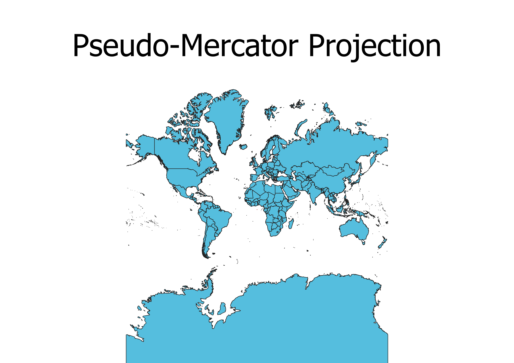

In this project I learned how to display images in different projections
Describe in your own words how you displayed the map in different projections using QGIS
To display the different projections in QGIS, I first used the base map from Natural Earth. Then through properties I could change the projection of the map to any type of projection. However, when changing projections, the Indicatrix Mapper would not work except for on the default projection.
WGS84 Projection
This projection appears to favor keeping the gerenal shape consistent rather than the sizes and distances consistent.

Aitoff Projection
This projection is focused around the equator and prime meridian, with areas becoming more distorted the further from the center they are. The shapes remain reletively constant, but the sizes largely distorted.

Pseudo-Mercator Projection
This projection keeps the shape consistent and accurate, but the sizes are very distorted, especially the further away from the equator.

Sphere Winkel Projection
This projection maintains accurate sizing while only slightly sacrificing the accuracy of the shapes. This is due to the projection being slightly curved instead of being rectangular.

Cylindrical Equal Area Projection
This projection focuses near exclusively on maintaining accurate sizing, but it does so by stretching out the poles.

Equidistant Conic Projection
This projection displays each of the meridians converging to the center, with the land being layed over it. It maintains accurate sizing, but distances and locations are very distorted.

Azimuthal Equidistant Projection
This projection is very similar to the Equidistant Conic Projection, but the point of convergence for the meridians is slightly different.

Mercator Projection
This projection heavily distorts sizes to try and maintain accuracy to positioning. This leads to areas around the equator being significantly smaller than they actually are.

Robinson Projection
This projection maintains accurate sizing and distances by being curved instead of rectangular. There is still some distortion away from the prime meridian, but it is significantly less than in other projection.

Now, you should add the following projections on your own:
EPSG: 3857, 53018, 54034, 54027, 102016, and two additional projections that you choose.
Data used for this project
Download Natrual Earth 1:10m Cultural Vector